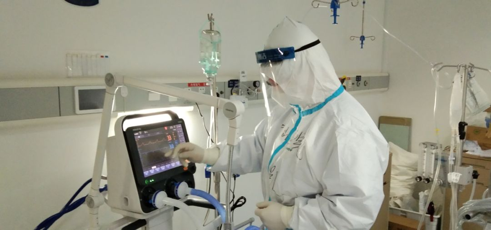
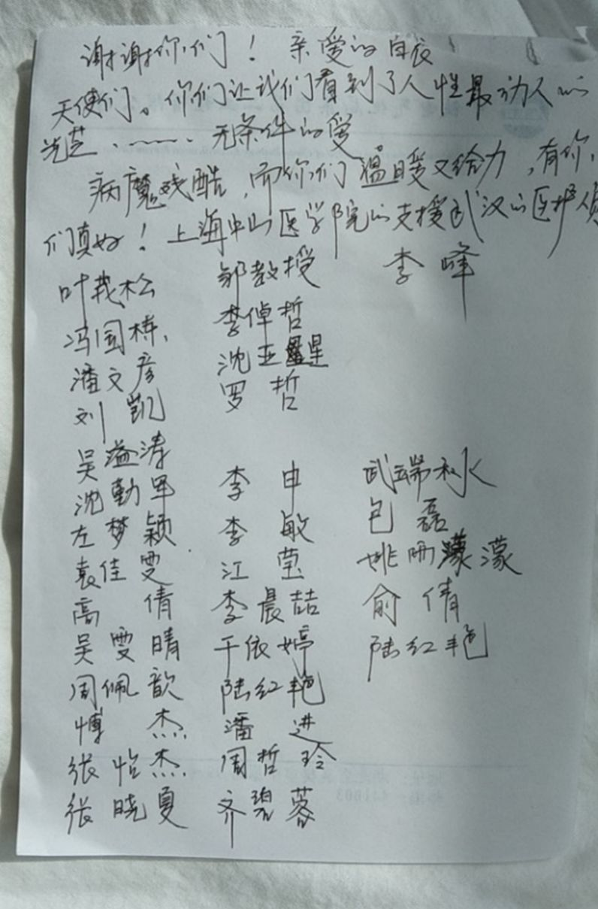
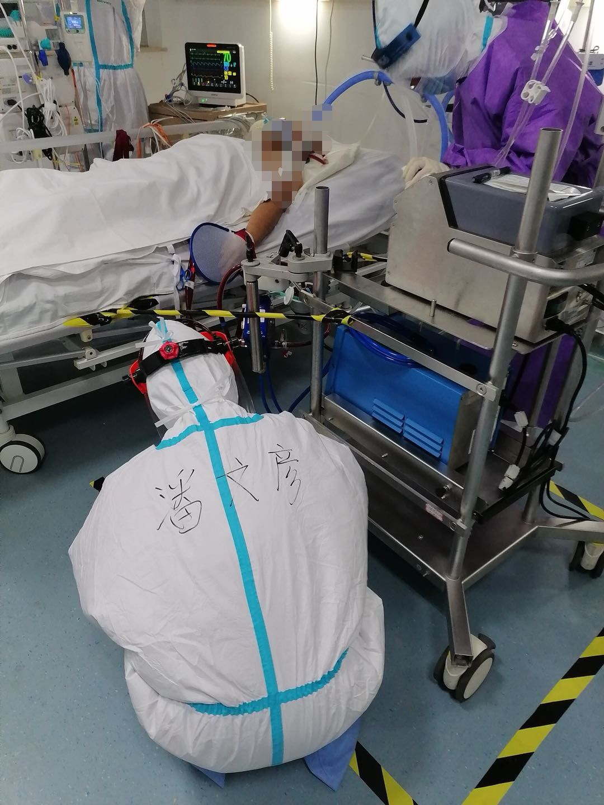

独家 | 第一批上海援鄂医疗队领队郑军华：重症患者治疗已经积累一些经验
原文链接 备份链接 2月4日下午，《新民周刊》连线了正在一线的第一批上海援鄂医疗队领队、临时党总支书记、上海市第一人民医院副院长郑军华，了解第一批上海援鄂医疗队在武汉金银潭医院的具体情况，也澄清了现在社会上的对于医疗队安全保障的关切。 郑 …
她说：我相信你们一定是一群最美丽的人，等疫情过去，我要对着小本本认一认，我要带着每一位好好看看武汉的美景。
文｜黄 祺
昨天从隔离病房下班拿到自己的手机，复旦大学附属中山医院援鄂医疗队队员刘凯医生被“吓一跳”，他的照片不仅朋友圈刷屏，还有好多未接的记者来电等着他。
武汉疫情一个多月后，太多人期待重见阳光，而这张患者和医生一起看夕阳的照片，照亮了人们阴霾多日的心。

照片最早刊登于复旦大学附属中山医院的官方微博，说明描述：照片拍摄于武汉大学人民医院东院，中山医院援鄂医疗队队员刘凯医生在护送病人做CT途中，停下来，让已住院近一个月的87岁老先生欣赏了一次久违的日落……
接受《新民周刊》采访时刘凯医生表示，看到照片刷屏，惊讶也惊喜。“很高兴大家喜欢这张照片，不过我希望大家不用太多关注我个人，千万医生和我一样在这里战斗，很多人来得比我更早，比我更辛苦。”

刘凯医生是2月7日抵达武汉的中山医院援鄂医疗队队员，医疗队一百多名医护人员由资深专家和年轻骨干组成，到武汉后承担了重症患者的救治重任。

刘凯医生告诉《新民周刊》，中山医院第四批援鄂医疗队，整建制接手武汉大学人民医院东院区两个重症病房，医疗队队长是罗哲教授。“我们收治的都是重症患者，经过近一个月的治疗，患者大多数平稳或转轻，有部分已经治愈出院了，但还是有小部分病情危重，不过我们相信疫情最严重的阶段很快就要结束了。”

2月7日出发时，右一为刘凯医生
关于照片背后的故事，刘凯医生介绍，病床上的老人过去是乐团小提琴手，身体状况好的时候喜欢唱唱歌。
上海医疗队刚接手时，老人病情非常严重，不与人交流，拒接家人的电话。老人家住得比较远，家人送生活用品不方便，医护人员就承担起照料老人生活的任务。
最近几天，老人病情好转，需要做CT检查看看恢复的情况。做完检查回病房的路上，正是夕阳余晖满天，“我就问老人家要不要停下来看看太阳，老人说，好。” 这一幕被一位志愿者用手机记录下来。


27岁的刘凯医生，自我评价性格“有时比较粗，做事比较细，还经常比较逗比”。这一次变“网红”让他措手不及。
刘凯医生的岗位，准确说叫“呼吸治疗师”，这个新的职业名称刚刚出现在3月2日人力资源和社会保障部等国家多部门联合发布的16个新职业名单中。
重症监护室是刘凯的主战场，下面这张照片，是刘凯的同事偷拍到的。记录了平常工作中，刘凯监护一名ECMO治疗病人，睡眠太少，在监护室外席地睡着的一幕。

其实，刘凯医生还珍藏了另一张照片。

这是一位病人在纸上写下的救治和照顾过她的所有医护人员的名字，刘凯医生的名字也在其中。
照片是中山医院援鄂医疗队党支部副书记潘文彦护士长拍的。潘文彦告诉《新民周刊》，写名字的病人，之前非常悲观，几乎不跟任何人说话。经过了解，患者年迈的母亲因新冠肺炎刚刚去世，她的爱人也在其他医院治疗。她沉浸在绝望的情绪中，根本无心治疗。

潘文彦说，中山医院援鄂医疗队达成共识，不仅要战胜病魔，更要帮助患者战胜“心魔”。 “每天进入病房，大家都会问候她。我们温柔的一句‘阿姨，您今天好吗’，会给她很大的鼓励。我们鼓励她做肺康复，帮助她生活护理，让她重拾信心和勇气。时间久了，她慢慢愿意和我们医护人员说话了，她会问：‘你们是哪里来的？’”
潘文彦发现，这位病人总爱在自己的小本子上写啊写。有一天进病房时，患者拿出了小本本，潘文彦看到了上面这张写满名字的纸。
患者对潘文彦说：“护士长，我指标好转了，很快就能出院了，我现在特别想记住你们的样子，但你们都穿着防护服，每个人看起来都是一样的，所以我在自己的本子上，记下了每一位治疗护理我的医护人员防护服后的姓名。”
她说：我相信你们一定是一群最美丽的人，等疫情过去，我要对着小本本认一认，我要带着每一位好好看看武汉的美景。


征集令
阳春三月，万物复苏。在抗击疫情的战斗中，我们迎来了春天，《新民周刊》也迎来了新闻线索和故事征集的第二弹。
如今，经历了一个多月休眠的城市正在逐渐苏醒，各行各业都开始有序复工复产。
不论您是企业老板、管理者，还是普通员工；又或者，您是老师、家长，还是学生本人……我们希望了解复工复产复学过程中的困难，或暖心故事。
如果你是抗疫一线的医生护士，疫情期间拍下了珍贵的摄影作品，也欢迎联系我们投稿。
当然，抗击新冠肺炎疫情的相关故事，我们仍然欢迎。
希望广大读者朋友，提供相关线索，说出你的故事，让我们用新闻留存这一切。
《新民周刊》新冠肺炎线索征集值班编辑联系方式（添加时请简要自我介绍）：
周一：应 琛 微信号：paulineying0127
周二：金 姬 微信号：gepetta
周三：黄 祺 微信号：shewen-2020
周四：周 洁 微信号：asyouasyou
周五：孔冰欣 微信号：kbx875055141
周六：吴 雪 微信号：shyshine1105
周日：姜浩峰 微信号：jianggeladandong
✳如你需要捐赠物资，可与以下两位工作人员联系:王勇：WangYong-SH 吴轶君：rommy150708（添加时请注明“捐物资”，方便工作人员快速通过您的申请，谢谢。）
新闻是历史的底稿，你们是历史的见证者。期待你的故事、你的线索！

▼
大家还都在看这些
▼
新民周刊所有平台稿件， 未经正式授权
一律不得转载、出版、改编或进行
与新民周刊版权相关的其他行为，违者必究


原文链接 备份链接 2月4日下午，《新民周刊》连线了正在一线的第一批上海援鄂医疗队领队、临时党总支书记、上海市第一人民医院副院长郑军华，了解第一批上海援鄂医疗队在武汉金银潭医院的具体情况，也澄清了现在社会上的对于医疗队安全保障的关切。 郑 …
原文链接 备份链接 记者/ 刘汨 编辑/ 宋建华 世纪坛医院护士刘宇航摘下口罩的一瞬间 那辆579路公交已经很久没到过武汉的地标之一江滩公园了，过去的一个多月，它成了北京医疗队的摆渡车，往返于三角湖路和武汉协和西院之间。从午后到凌晨，驶过 …
原文链接 备份链接 澎湃新闻记者 李佳蔚 上海复旦大学附属中山医院官方微博 图 3月5日，武大人民医院东院，上海复旦大学附属中山医院支援湖北医疗队队员刘凯医生在护送病人做CT的途中，停下来，让已经住院近一个月的87岁老先生欣赏了一次久违的 …
原文链接 备份链接 这是驰援武汉的复旦大学附属中山医院医疗队领队朱畴文的谈话录音，讲述了他和他的团队从抵达武汉，进驻医院到参与治疗过程的经历，在谈到武汉和武汉人时，他几度声音哽咽。关于防护物资、关于病人收治、关于疫苗、关于心理压力、关于 …
原文链接 备份链接 作为一名医生，我十分清楚在每一个新冠肺炎患者背后，都有一个备受煎熬的家庭，这个坎能不能过去，需要大家一起扛。而随着武汉封城时间越来越长，一些非新冠肺炎的病患，同样也在默默承受着煎熬。 口述 | 郑 华 整理 | …